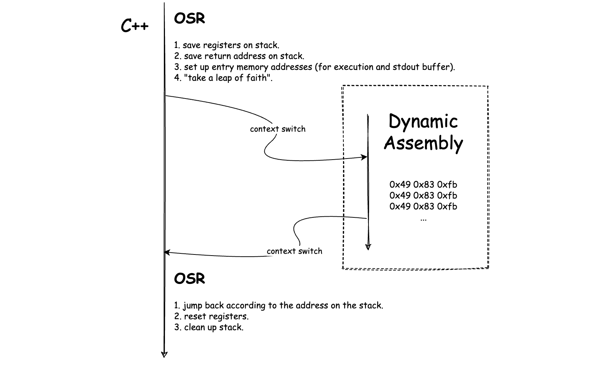

JIT Compilation：理解与实现
本文主要介绍了基础编译技术中的 JIT Compilation 技术，以及如何使用 C++ 快速构建一个简单的 JIT Compiler。
大约是在一年以前，“写一篇文章介绍 JIT Compiler 是如何工作的”这个想法就一直躺在我的 TODO List 中迟迟不能被点掉，而如今终于有时间将之付诸行动。那么通过这篇文章，我希望能够让你了解到以下这些内容：
- 什么是 JIT Compilation 技术？它有哪些特性？
- 如何使用 C++ 在不依赖任何框架的情况下实现一个 JIT Compiler？
而限于篇幅和主题范围，本文将不会涉及以下这些内容：
- 如何编写完备的 Interpreter / Compiler？
- 相关的高级编译优化技术。
由于编写 JIT Compiler 会涉及到从诸如 C/C++ 等高级编程语言、汇编、计算机体系结构，直到操作系统等多个方面的知识，因此这里我将假设读者已经具备这些领域相关的基础知识，而当在文中实际涉及到相关内容时，我也会进行简单的介绍。
在本文接下来将要阐述的例子中，考虑到完备性，以及为了便于进行 Benchmark，我们会为一个名为 Brainfuck 的真实存在的编程语言实现一个简单的 JIT Compiler。同时，我们也会为其实现一个相应的 Interpreter，从而比较 JIT Compilation 与 Interpretation 这两种方式在代码整体执行效率上的差异。而关于 Interpreter 部分的具体实现细节，你可以参考例子所在仓库中给出的源代码，限于篇幅，本文将不做赘述。在我们正式开始之前，以下是你继续阅读所需要提前了解的一些事项：
- 代码仓库：https://github.com/Becavalier/brainfuck-jit-interpreter；
- 我们构建的 JIT Compiler 将以 X86-64 作为目标平台，其可以运行在 macOS 与 Linux 系统上；
- 由于 Compiler 实现部分的代码较多，因此本文将有选择性地进行介绍，完整代码请参考上述仓库。
好的，那让我们开始吧。
Brainfuck 编程语言
Brainfuck 是一门从名字上来看就十分特殊的编程语言，它由 Urban Müller 于 1993 年创造。brainfuck 一词本身是一个俚语词汇，通常用来指带那些超出人们理解的、非常复杂和罕见的事物，而 Brainfuck 这门语言便是如此。例如，以下这段 Brainfuck 代码在正常执行后便会向控制台输出 “Hello, world!” 这几个字符。
++++++++++[>+++++++>++++++++++>+++>+<<<<-]>++.>+.+++++++..+++.>++.<<+++++++++++++++.>.+++.------.--------.>+.>.
可以看到，通过肉眼识别代码本身，我们根本无法得知整段程序的意图，而这也正映射了 Brainfuck 语言其名称的含义。虽然如此，但 Brainfuck 语言本身确是一门图灵完备的极简编程语言。Brainfuck 语言仅由 8 种不同的指令组成，所有由该语言编写的程序均包含由这 8 种不同指令组成的不同指令序列。而程序在运行时，其包含的这些指令序列将被顺序依次执行。除此之外，Brainfuck 的执行模型也十分简单。除这 8 种不同的指令外，程序在执行时还会维护一个至少包含 30000 个单元的一维字节数组（后面我们将简称其为“纸带”）。程序初始执行时，数组中的所有单元格均会被初始化为数值 0，一个可以前后移动的“数据指针”将默认指向这个数组的第一个单元。而程序在运行时将会根据不同的指令来前后移动这个数据指针，并相应地更新或使用当前所指向单元格中的内容。关于上述提到的 8 种指令，它们所对应的字符和说明如下所示：
| 指令字符 | 含义 |
|---|---|
| > | 将数据指针的值增加 1（即向右移动，指向当前单元右侧的单元） |
| < | 将数据指针的值减少 1（即向左移动，指向当前单元左侧的单元） |
| + | 将数据指针当前所指向单元内的字节值增加 1 |
| - | 将数据指针当前所指向单元内的字节值减少 1 |
| . | 输出当前数据指针所指向单元内存放的字节值 |
| , | 接受一个输入的字节值，并将其存放到当前数据指针所指向单元内 |
| [ | 如果当前数据指针所指向单元内的字节值为 0，则执行流程跳转到后续与其配对的 “]” 指令的后一个指令 |
| ] | 如果当前数据指针所指向单元内的字节值不为 0，则执行流程回退到前方与其配对的 “[” 指令的后一个指令 |
为了加深理解，我们可以举一个简单的例子，比如下述这段 Brainfuck 代码。
++[->+<]
这段代码首先会将纸带第一个单元格内的值连续递增两次（++），即变为 2。随后，[ 指令检查到当前单元格内的值不为 0（为 2），因此继续执行下一条指令。后续的四个指令 ->+< 会先将当前单元格内的值减一，接下来将数据指针向右移动到第二个单元格，然后将该单元格内的值加一，随后再返回第一个单元格，如此往复循环。直达最后的 ] 指令判定第一个单元格内的值为 0 时，程序结束运行。因此我们可以得知，这段程序主要用来更换纸带前两个单元格内的值。相应地，你也可以使用 Brainfuck Visualizer 来查看上述程序的完整动态执行过程。
JIT Compilation
在了解了目标语言后，接下来让我们一起看看 JIT Compilation 技术究竟是什么？相信无论是做前端、后端，还是移动端，对于 “JIT” 一词，你都肯定有所耳闻。JIT Compilation 的全称为 “Just-In-Time Compilation”，翻译过来为“即时编译”。其最显著的特征是代码的编译过程发生在程序的执行期间，而非执行之前。通常在编译技术领域，我们会将 JIT 与 AOT 这两种方式进行对比。AOT 编译相信大家都十分熟悉，常见的比如：使用 Clang 对 C/C++ 代码进行编译、使用 Babel 编译 ES6 代码，甚至是将 JavaScript 代码编译为专用于某一 JS 引擎的 IR（Intermediate Representation）等过程都可以被认作是 AOT 编译的一种具体类型。而 JIT 与 AOT 之间的最大区别便是“编译过程发生的时间点”，对于 JIT 而言，其编译过程发生在程序的运行时；而对 AOT 来说，编译过程则发生在程序执行之前（通常为构建时）。
传统的 JIT 编译器在实际动态生成机器码前，会首先对原始代码或其相应的 IR 中间代码进行一系列的分析（profiling）。通过这些分析过程，编译器能够找到可以通过 JIT 编译进行性能优化的“关键代码路径”。而这里的取舍重点在于：对这些代码进行运行时优化而得到的性能提升收益，需要高于进行优化时所产生的性能开销。在后面的文章中我们将会看到，对于我们的实例而言，这些开销主要来自于代码的运行时编译，以及进行 OSR（On-Stack Replacement）的过程。而为了便于理解，在本文后续的实例中，我们将不会实现传统 JIT 所进行的代码预分析过程。
另外需要注意的是，通常的 JIT 编译器由于考虑到“启动延迟（startup time delay）”的问题，因此一般会结合解释器一起使用。JIT 编译器所进行的代码分析过程越精细、所实施的优化越多，其动态生成的机器代码质量也会越高，但随之而来的初始代码执行延迟也会越大。而解释器的加入便可使代码的执行过程提前进行。而在此期间，JIT 编译器也会同时对代码进行分析和优化，并在特定的时刻再将程序的执行流程从解释执行转换到执行其动态生成的优化机器码。因此，对于 JIT Compilation 这项技术而言，其实现方式需要取舍的一个重点是：在编译时间和生成的代码质量之间进行权衡。比如，JVM 便有着两种可以选择的 JIT 模式 —— client 与 server，其中前者会采用最小的编译和优化选项以最大程度降低启动延迟；而后者则会采用最大化的编译和优化策略，同时牺牲程序的启动时间。
实现细节
Ok, it’s time to showcase :)。首先声明，我们为 Brainfuck 语言实现的 JIT Compiler 只用于作为本文内容的 POC，而并没有考虑作为生产版本的完备性，比如：exception-handling、thread-safe、profiling、assembly fine-tuning 等等。其次，接下来将要介绍的实现细节将着重聚焦于源代码中的函数 bfJITCompile、函数 allocateExecMem，以及类 VM 这三个部分，这里建议在继续阅读前，先自行大致浏览一下源代码。
就如同上面我们所说的那样，JIT Compilation 的代码编译过程发生在程序的运行时，因此从源代码中也可以看到，我们通过用户在运行解释器程序时所提供的不同参数（–jit）来决定是采用 JIT 编译执行，还是直接解释执行。而对于 “JIT 编译执行” 这种方式来说，其流程可大致总结为：
- 读入源代码（包含 ASCII 形式的指令序列）；
- 调用 bfJITCompile 函数，将源代码编译为机器码；
- 调用 allocateExecMem 函数，将机器码动态分配在可执行的内存段上；
- 调用 VM::exec 函数，通过 OSR 转移执行流程；
- 代码执行完毕后再次转移回主流程；
- 执行一些清理善后工作。
接下来，我们将重点介绍上述流程中的第二、三及第四项的具体实现细节。
编译机器码
在这一步中，我们会将程序启动时输入的 Brainfuck 源代码中的所有指令字符全部“提取”出来，并直接按顺序为其生成相应的机器码版本的二进制代码。这些生成的二进制机器码集合将被存放在一个 std::vector 对象中以备后续使用。为了简化机器码的生成过程，我们简单地通过 switch 语句识别出指令对应的字符，并“返回”该指令对应的 X86-64 二进制机器码。而这些返回的机器码也将被直接“拼接”到用于存放机器码集合的 Vector 容器中。
这里需要注意的是，对于这些返回的二进制机器码，由于其中可能含有引用的相对地址信息（RIP-Relative），因此在被实际存放到 Vector 容器之前，我们还需要通过诸如 _relocateAddrOfPrintFunc 等方法来对这些二进制机器码进行“地址重定位”处理。通过这些方法，我们能够准确计算出这些相对地址的实际信息，并对它们进行修正。
首先，在 bfJITCompile 函数的定义中我们可以找到如下这段代码。通过这段代码，我们将 Brainfuck 执行模型中的“数据指针”其地址存放在了寄存器 rbx 中，这样后续我们便可以通过修改或使用该寄存器中的值来控制数据指针的位置，或者读取、修改当前数据指针所指向纸带单元格中的内容。这里代码中的 “/* mem slot */” 表示该注释所在位置的内容将在编译时被替换为实际引用的内存地址。而这个地址将来自于 bfState::ptr 的值在经过函数 _resolvePtrAddr 处理后返回的小端（little-endian）格式地址。
// prologue.
std::vector<uint8_t> machineCode {
// save dynamic pointer in %rbx.
0x48, 0xbb, /* mem slot */
};
// ...
接下来，随着不断读入的指令字符，bfJITCompile 函数便可以依次将这些指令转换为其对应的机器码版本。对于 “+ - > <” 这四个指令来说，它们所对应的机器指令只需要通过操作我们先前存放在 rbx 寄存器中的数据指针的地址值，便可完成对 Brainfuck 抽象机器的状态改变。比如以 “+” 指令为例，我们可以找到如下这段代码：
// ...
case '+': {
for (n = 0; *tok == '+'; ++n, ++tok);
const auto ptrBytes = _resolvePtrAddr(ptrAddr);
std::vector<uint8_t> byteCode {
0x80, 0x3, static_cast<uint8_t>(n), // addb $0x1, (%rbx)
};
_appendBytecode(byteCode, machineCode);
--tok;
break;
}
// ...
在这段代码中我们首先使用了一个很容易想到的优化策略，那就是当遇到连续的 “+” 指令时，相较于为每一个出现的 “+” 指令都生成相同的、重复的机器码，我们可以选择首先计算遇到的连续出现的 “+” 指令的个数，然后再通过一条单独的汇编指令 addb $N, (%rbx) 来将这多个 “+” 指令所产生的状态变更一次性完成。相同的方式还可以被应用到其余的三种指令，它们分别对应数据指针所指向单元格内值的改变，以及数据指针本身的值的改变。
而对于 “,” 及 “.” 指令来说，由于它们涉及 IO 操作，因此这里对应的机器码将涉及对操作系统调用（System Call）的调用过程。操作系统调用需要遵循特定的调用惯例（Calling Convention），比如通常来说，寄存器 rax 用于存放系统调用号、rdi 用于存放第一个参数、rsi 用于存放第二个参数，以及 rdx 用于存放第三个参数等等。同时，macOS 与 Linux 操作系统下的系统调用号也并不相同，这里我们通过预处理指令来进行区分。
// ...
case ',': {
/**
movl $0x2000003, %eax
movl $0x0, %edi
movq %rbx, %rsi
movl $0x1, %edx
syscall
*/
std::vector<uint8_t> byteCode {
#if __APPLE__
0xb8, 0x3, 0x0, 0x0, 0x2,
#elif __linux__
0xb8, 0x0, 0x0, 0x0, 0x0,
#endif
0xbf, 0x0, 0x0, 0x0, 0x0,
0x48, 0x89, 0xde,
0xba, 0x1, 0x0, 0x0, 0x0,
0xf, 0x5,
};
_appendBytecode(byteCode, machineCode);
break;
}
// ...
最后，对于 “[” 和 “]” 指令，其实现逻辑会稍微有些复杂。以 “[” 指令为例，如下代码所示。在这里，将 “[” 指令的语义逻辑直接映射到汇编代码是十分简单的，其逻辑是：判断当前数据指针所指向单元格的值是否为 0。若为 0，则执行流程跳转到后续与其配对的 “]” 指令的后一个指令；否则继续执行下一条指令。因此，我们这里直接使用 cmpb 汇编指令来判断以寄存器 rbx 中的值作为地址时，其对应内存位置的值是否为 0。若为 0，则使用 je 汇编指令跳转到后续的指令位置，否则直接执行下一条指令。代码中对“后续指令地址”的使用将会在与其配对的 “]” 指令处理流程中对其进行重定向处理。因此，这里我们将使用连续四个字节的 0x0 值进行占位。另外需要知道的是，为了简化实现，这里我们将固定使用 “near jump” 模式。
// ...
case '[': {
/*
cmpb $0x0, (%rbx)
je <>
*/
std::vector<uint8_t> byteCode {
0x80, 0x3b, 0x0,
0xf, 0x84, 0x0, 0x0, 0x0, 0x0, /* near jmp */
};
// record the jump relocation pos.
_appendBytecode(byteCode, machineCode);
jmpLocIndex.push_back(machineCode.size());
break;
}
// ...
至此，我们便完成了机器指令的动态编译工作。通过这个阶段，我们的程序可以将输入的 Brainfuck 指令字符序列转换成对应的平台相关的二进制机器码。你可以在 bfJITCompile 函数的最后看到如下这样一段用来收尾的代码。这段代码主要用于在程序退出前输出 stdout 缓存区中的内容，并重置 rip 寄存器的值，以将程序执行流程退回到 C++ 代码中。后续我们还将回顾这部分内容。
// epilogue.
// mainly restoring the previous pc, flushing the stdout buffer.
/**
cmpq $0, %r11
je 8
callq <print>
jmpq *(%rsp)
*/
std::vector<uint8_t> byteCode {
0x49, 0x83, 0xfb, 0x0,
0x74, 0x8,
0xe8, /* mem slot */
0xff, 0x24, 0x24,
};
可执行内存分配
接下来，我们将关注点从“如何动态生成机器码”移到“如何动态执行机器码”这个问题上。关于这部分实现可以参考名为 allocateExecMem 的函数，相关如下代码所示。
// ...
uint8_t* allocateExecMem(size_t size) {
return static_cast<uint8_t*>(
mmap(
NULL,
size,
PROT_READ | PROT_WRITE | PROT_EXEC,
MAP_PRIVATE | MAP_ANONYMOUS,
-1,
0));
}
// ...
在这个函数的定义中，我们调用名为了 mmap 的函数，而这个函数便是支持“动态执行机器码”的关键所在。mmap 函数是一个由 C 标准库提供的系统调用，通过该函数，我们可以在当前进程的 VAS（Virtual Address Space）中创建一个映射。这个映射可以指向一个具体的文件、或者是一个匿名空间。关于 mmap 函数，我们最为熟知的一种使用方式便是在为目标文件分配虚拟页时，操作系统会使用该函数将页表条目指向目标文件中的适当位置。而在这里，我们则需要利用该函数创建不指向任何实际文件的“匿名空间”，并将我们在上一步中编译得到的二进制机器码连续地放入到这段内存空间中。
不仅如此，通过为 mmap 函数的第三个参数指定 PROT_EXEC 属性，我们可以将这段申请的匿名内存空间标记为“可执行”。这意味着，存放在这段内存空间中的机器指令可以被 CPU 执行。而关于该函数其他参数的详细配置信息，你可以参考这里找到更多答案。allocateExecMem 函数的实际调用过程则被放置在了 VM 类的构造函数中，在这里我们通过 RAII 将资源的分配与销毁进行了简单的封装。
OSR（On-Stack Replacement）
当编译生成的二进制机器码被放入可执行的匿名内存段后，接下来的重点便是：如何将程序的指令执行流程转移至这段内存的起始位置处？关于这部分实现，我们需要借助 Clang/GCC 编译器提供的 “C++ 内联汇编” 功能。你可以在 VM::exec 函数的实现中找到答案。这段代码如下所示：
// ...
void exec() {
// save the current %rip on stack (by PC-relative).
// %r10 - stdout buffer entry.
// %r11 - stdout buffer counter.
asm(R"(
pushq %%rax
pushq %%rbx
pushq %%r10
pushq %%r11
pushq %%r12
movq %1, %%r10
xorq %%r11, %%r11
lea 0x9(%%rip), %%rax
pushq %%rax
movq %0, %%rax
addq %2, %%rax
jmpq *%%rax
)":: "S" (mem), "m" (stdoutBuf), "D" (prependStaticSize));
// clean the stack.
asm(R"(
addq $8, %rsp
popq %r12
popq %r11
popq %r10
popq %rbx
popq %rax
)");
}
// ...
在这段代码中，我们使用了两次 asm 汇编指令。其中，第一次内联汇编的目的主要是为了将程序的执行流程转移到我们之前动态编译生成的机器码上。这里前 5 行对 push 指令的调用过程主要用于将这些寄存器中的值存放到栈上，以保护此刻的寄存器状态。而这些值将会在程序的执行流程返回到 C++ 代码后再被重新恢复。第 6 行的 movq 指令将 stdout buffer 的首地址存放到了寄存器 r10 中，这个 buffer 将用于缓存通过 “.” 指令输出的字符内容，以减少系统调用的实际调用次数，提升性能。接下来的第 8-9 行，我们将正常 C++ 代码执行流程的下一条指令其地址存放到了栈上，以便后续能够从动态执行流程中正常返回。第 10-11 行，我们正确地设置了匿名可执行内存段的地址以及相应的偏移位置（跨过了静态的 subroutine 定义部分）。最后一行，通过 jmpq 指令，我们让 CPU 的执行流程跳转到以 rax 寄存器中的值作为内存地址的位置，即包含我们将要执行的第一条动态指令的位置。
至此，从 C++ 代码到动态指令的执行转移流程便完成了。而当动态生成的指令全部执行完毕后，我们需要通过类似的方式再将执行流程转移回正常的 C++ 代码中。还记得我们在“编译机器码”这一小节最后提到的那小段 “epilogue” 汇编代码吗？如果返回去查看，你会发现在这段代码的最后一条指令中，我们使用了 jmpq *(%rsp) 指令，这条指令将会把 CPU 的执行流程转移到以当前进程栈底存放的那个 qword 值作为地址的内存位置上。而这个值，便是我们在上一步中存放的 C++ 代码的返回地址。当执行流程返回到 C++ 代码后，我们遇到了第二个 asm 汇编指令。通过这段指令，我们可以清理栈上的内容并同时恢复相关寄存器的状态。到这里，程序的执行流程便基本结束了。
让我们将目光再移回到本小节的主题 “OSR” 上来。OSR 的全称为 “On-Stack Replacement”。借助 Google，我们可以找到对它的一个定义，如下所示：
On-stack-replacement (OSR) describes the ability to replace currently executing code with a different version, either a more optimized one (tiered execution) or a more general one (deoptimization to undo speculative optimization).
实际上，对于 OSR 我们可以将其简单理解为“从一个执行环境到另一个执行环境的转换过程”。比如在我们的实例中，VM::exec 函数在执行时，它会将执行环境从 C++ 代码转移至动态生成的机器码，最后再以同样的方式转移回来。而这样的执行环境转换便可被视为 OSR 的过程。下图是对上述 OSR 过程的一个形象展示。

Benchmark
至此，我们已经介绍完了 Brainfuck JIT Compiler 几个关键点的实现细节。那现在让我们来看看这个粗糙版的 JIT 编译器其性能如何？项目的源代码中提供了两组测试，分别用于测试 “IO 密集型” 和“计算密集型”这两个场景。一组测试结果如下所示：
- IO 密集型 case：
Benchmark for 10 seconds: (higher score is better)
12950 interpreter
35928 jit (win)
- 计算密集型 case：
Benchmark Result: (lower time is better)
13.018s interpreter
0.885s jit (win)
可以看到，总体结果还算不错。对于 IO 密集型的测试用例，JIT Compilation 相比单纯的 Interpretation 可以带来将近 3 倍的性能提升。而对于计算密集型场景来说，JIT 带来的性能提升便十分可观了。在我们的“打印曼德布洛特集合”的测试用例中，使用 JIT Compilation 相较于 Interpretation 可以带来将近 15 倍的性能提升。当然，鉴于我们并没有采用更加完备的测试集合及测试方案，这些测试用例结果仅供参考。
更多信息
接下来，我们将会对额外的一些问题进行适当的讨论。当然，这些话题中每一个都可以展开形成一篇完整的文章，因此这里只做引申之意。更多的信息请自行 Google。
Interpretation 之殇
可以说，“branch-misprediction” 是众多导致解释器运行缓慢的原因中最为重要的一个。例如我们在本文实例的源代码中实现的那个基于 switch 语句的解释器。这个解释器模型每次读取输入源文件中的一个字符指令，然后再根据指令内容相应地改变当前解释器的状态（如：数据指针、纸带内容等）。而这样方式所产生的问题在于：从宏观来看，CPU 在实际执行这个 switch 语句时，无法得知下一次将要输入的可能符号指令是什么，而这便会导致 “PC 分支预测” 失败。从微观上来看，无法预测或预测失败都会导致 CPU 时钟周期的浪费（需等待结果，或丢弃错误预测值而导致流水线重填装等）。因此，由“流水线相关”导致的指令延迟也将在大量指令执行后凸显出来。
而对于诸如 “Direct Threading” 与 “Subroutine Threading” 等解释器模型来说，它们虽然可以较好地解决分支预测失败的问题，但随之而来的诸如：使用了过多的 jmp 指令、产生了无用的栈帧（没有 inline）等问题也会大大降低解释器在解释程序时的性能。相对的，JIT Compilation 通过动态生成机器码、inlining 编译等基本优化策略便可轻松避免上述这些问题。不仅如此，某些 JIT 编译器甚至能够获得比 AOT 方式更高的运行时性能提升。而这主要源于 JIT 能够在代码运行时根据当前操作系统类型、CPU ISA 体系、代码 Profiling 结果进行更加动态、启发式的代码优化过程。
JIT 实现策略与方式
常见的 JIT 策略可以被分为这样几类：Method-based JIT、Trace-based JIT 以及 Region-based JIT。其中，Method-based JIT 使用“函数”作为独立的编译单元，编译器会在代码执行的过程中识别出热点函数（比如依据函数的被调用次数），然后再使用编译后的机器码版本进行替换。这种方式实现较为简单但也存在相应的问题，比如其 JIT 粒度较为粗糙，热代码的命中率较低，位于函数体中的耗时逻辑（比如“循环”）无法被准确捕捉。
相对的，Trace-based JIT 则使用 “Trace” 作为热代码的编译单元。一个 Trace 是指程序在运行时所执行的一段热代码路径。从源代码上来看，这些热代码的执行路径可能会横跨多个函数。而 JIT 编译器要做的事情，便是对这段路径上的热代码进行运行时的编译优化。
最后的 Region-based JIT 则是以 “Tracelet” 作为其编译单元的，这种 JIT 方案主要来自于 Facebook 的 HHVM 虚拟机实现。一个 Tracelet 通常是指一段可以被“类型特化”的最长的执行路径。更多的信息可以参考这篇论文（作者也不了解，就不展开讲了）。
除了上述这三种常见的 JIT 编译器实现策略外，对于实现细节，相较于我们在本文中使用的“人肉机器码编译”过程，通常我们会选择使用一些编译框架来提供更好的机器码拣选和编译功能。常用的框架比如：DynASM、LLVM 以及 Cranelift 等。这些框架通常不止提供基础的、针对具体平台的机器码编译功能、同时也还会提供相应的代码优化功能。比如对于 Method-based JIT 这种策略来说，通常一些可用于静态 AOT 编译的优化策略也可以被 JIT 编译器直接使用，而通过使用诸如 LLVM，我们便可以更简单地直接使用这些十分成熟的优化策略，免除了重复实现的烦恼。
参考资料
- https://solarianprogrammer.com/2018/01/10/writing-minimal-x86-64-jit-compiler-cpp/.
- https://solarianprogrammer.com/2018/01/12/writing-minimal-x86-64-jit-compiler-cpp-part-2/.
- https://corsix.github.io/dynasm-doc.
- https://en.wikipedia.org/wiki/Just-in-time_compilation.
- https://en.wikipedia.org/wiki/Tracing_just-in-time_compilation.
- https://en.wikipedia.org/wiki/Brainfuck.
- https://gcc.gnu.org/onlinedocs/gcc-4.0.2/gcc/Extended-Asm.html#Extended-Asm.
- https://github.com/opensource-apple/xnu/blob/master/bsd/kern/syscalls.master.
- https://en.wikipedia.org/wiki/Ahead-of-time_compilation.
- http://prl.ccs.neu.edu/blog/2019/01/28/on-stack-replacement/.
- https://javapapers.com/core-java/jvm-server-vs-client-mode.
评论 | Comments